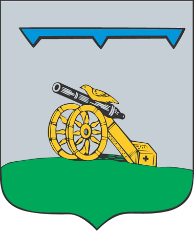
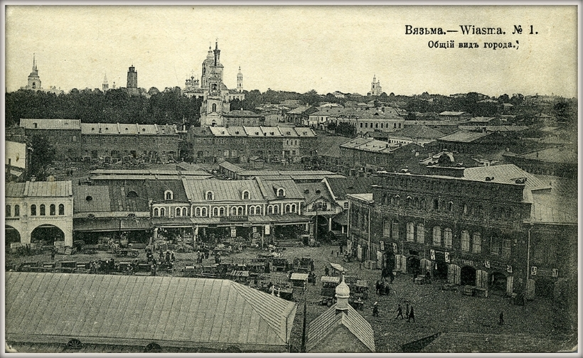
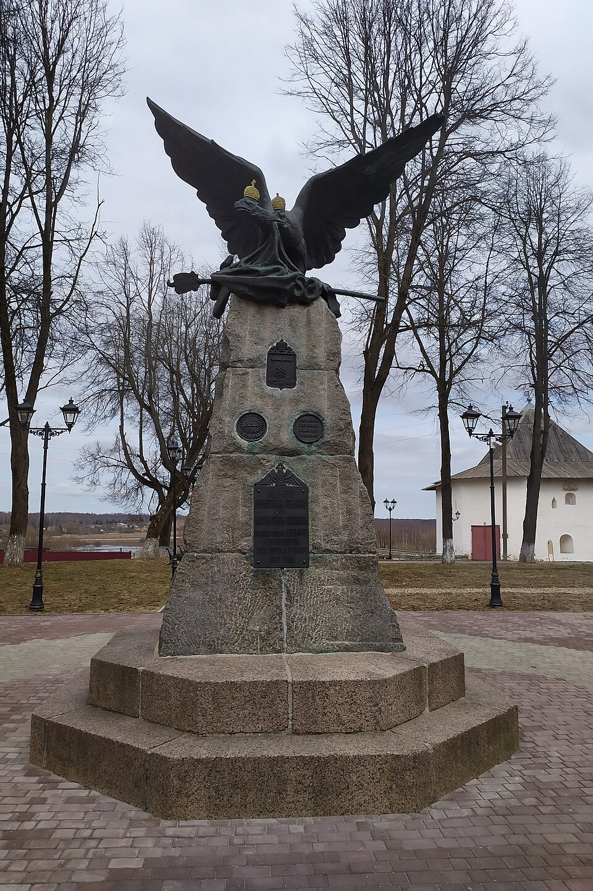
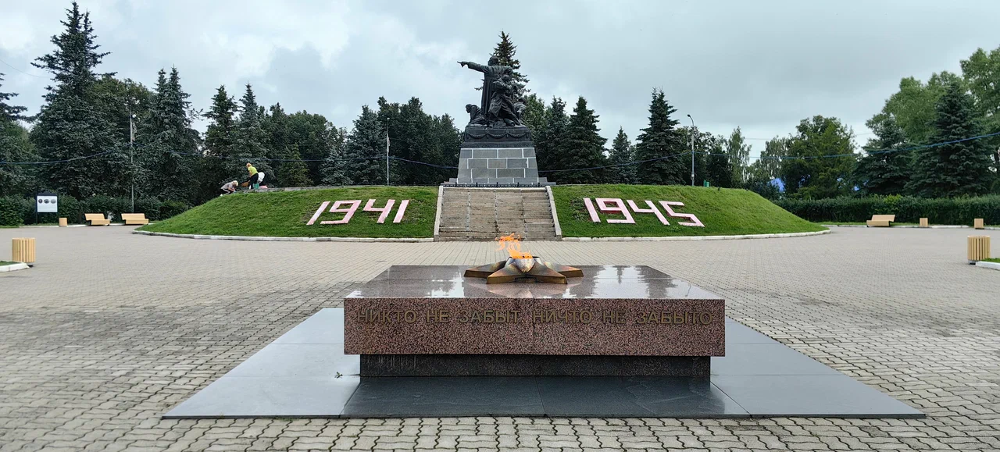
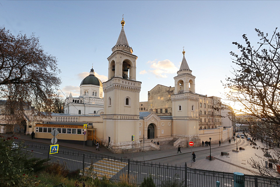
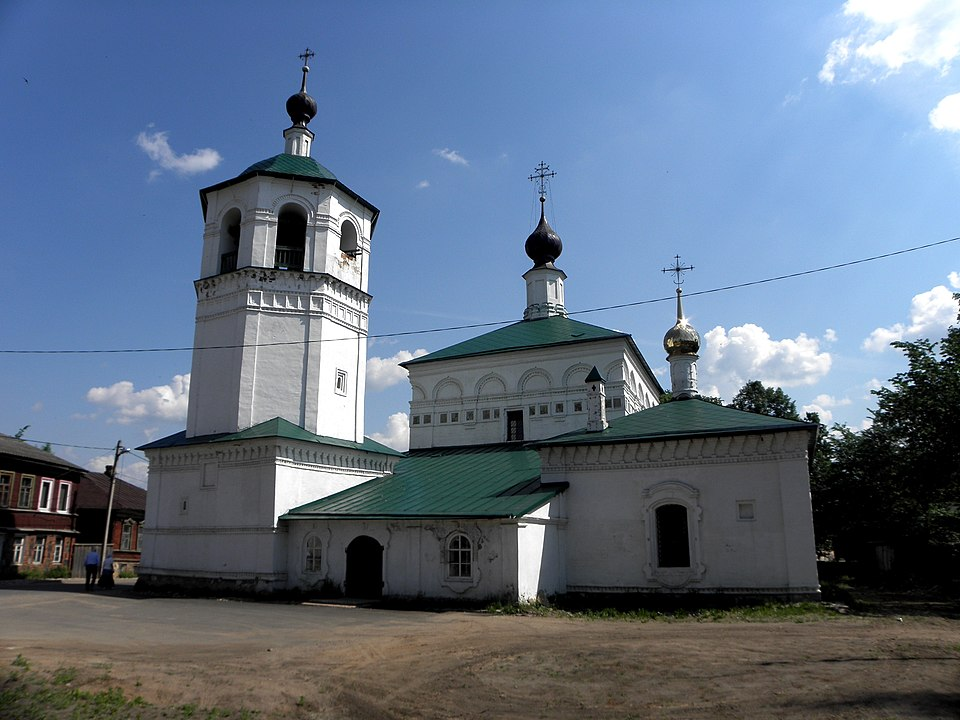
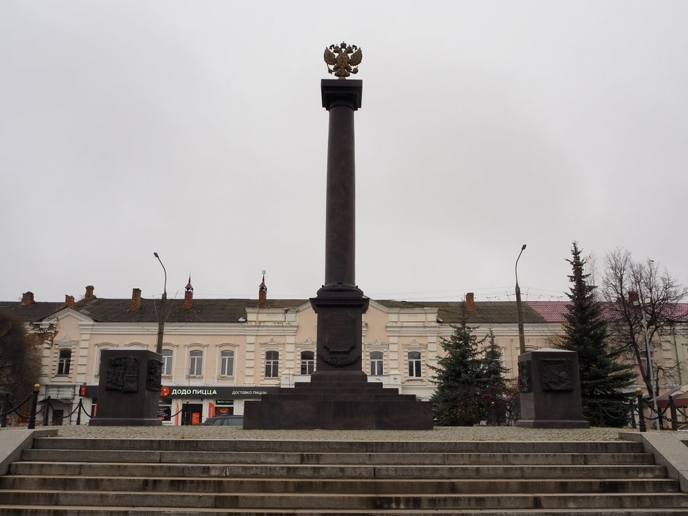
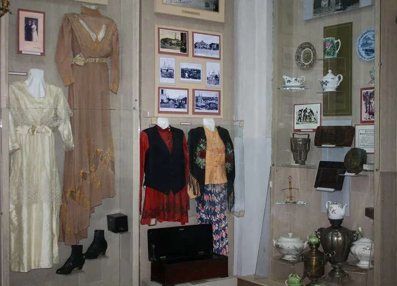

XII–XV века: Основание
Вязьма впервые упоминается в летописях в 1239 году. Город возник как пограничная крепость на торговом пути «из варяг в греки». Сохранились остатки древних валов.

Город воинской славы, древняя крепость на Смоленской земле. Здесь переплелись вехи истории, от средневековых валов до современных культурных троп.
Изучить маршруты
Вязьма впервые упоминается в летописях в 1239 году. Город возник как пограничная крепость на торговом пути «из варяг в греки». Сохранились остатки древних валов.

Вязьма стала ареной ожесточённых сражений. Здесь русские войска нанесли серьёзный урон отступающей армии Наполеона. Память об этом хранят обелиски и братские могилы.

Вязьма была оккупирована фашистами, но партизанское движение не прекращалось. В 2009 году городу присвоено почётное звание «Город воинской славы».

Иоанно-Предтеченский монастырь, Спасо-Преображенская церковь, старинные кельи.
Пешком • 2 часа
Троицкий собор, Никольская церковь, часовня Одигитрии — жемчужины вяземского зодчества.
Автомобиль • 3 часа
Обелиски героям 1812 года, мемориал «Вечный огонь», музей партизанской славы.
Автобус • 4 часа
Краеведческий музей, историческая застройка, пешеходная улица с купеческими особняками.
Пешком • 1.5 часа🗺️ Кликай по кнопкам маршрутов — карта покажет только нужные точки и проложит линию!